Altbautaugliche Verfahren und Baustoffe
Altbautaugliche Verfahren und BaustoffeDie Kapitel 9-10 wurden in folgende Unterkapitel aufgeteilt - 9. Natursteinrestaurierung: [1] [2]
[3] [4] [5]
[6]
Steinboden: [7]
Reinigungstechnik: [8]
10. Wandbildner im Vergleich: [9] [10] [11] [12] [13] [14] [15]
10.a Fachwerk/Blockbau: [16 - Die schärfsten Tipps zur Fachwerkrestaurierung: Woran erkennst Du einen Fachwerk-Experten?]
[17] [18] [19.1] [19.2]
Bodenaufbau/Holzboden: [20]
(aktualisiert 5.11.09)
12. Nachträgliche Dämmung innen oder außen nach Tabellen- und Rechenintelligenz ohne Energieersparnis und Verstand für praktische Durchfeuchtung und Speicherwirkung der Wandkonstruktionen. Geballtes Unverständnis gegenüber traditioneller Konstruktionskunst. Erzwingen von Bauschäden durch normierte Veränderung, Ersatz und Zerstörung bewährter Bauweise - unter Dauerbeschwörung der Klimaapokalyptik und sonstiger Wahnvorstellungen der Ökoreligion. Einbau überdichter Fenster, die der Bude Durchfeuchtung vorprogrammieren. Einbau von Lüftungstechnik, die dem Bewohner Sick-Building-Syndrom, Asthma und Allergie gönnt. Dämmtechnische Bekämpfung von schimmelempfindlichen "Wärmebrücken", ohne zu bemerken, daß nur der reduzierte Konvektionsheizluftstrom in den Ecken und Kanten des Raums dort für kühlere Oberflächen, das überdichte Isofenster für überhöhte Luftfeuchte und beides zusammen für Kondensat und Schimmel sorgt. Frei nach dem Motto: Dämmen for Dummies. Sinnlose Dämmung im Fußbodenaufbau, da man von der sich dort zwangsläufig entwickelnden "Wärmelinse" nach Prof. Klopfer noch nie gehört hat. Der Investor/Käufer/Mieter zahlt´s ja, die Behörde bezuschußt das und der Planer ist doch dort so wohlgelitten. Was braucht der denn den Bauherrn - na außer als Opfer vielleicht.
Dieser kleine Querschnitt durch Intelligenz bei der Fachwerksanierung ist nicht gerade selten, ob mit oder ohne öffentliche Förderung und Beratung, wiederzufinden. Prüfen Sie selbst! Und zahlen Sie weiter ohne Murren. Jeder bekommt doch das, was er verdient. Wenn Sie sich für Fachwerkschäden durch Wahnvorstellungen der "Experten" interessieren, fragen Sie nach in den Freilichtmuseen. Dort führt man es teils recht gern vor, wie doktorierte Zimmerbaukunst nach wenigen Jahren immerhin als abschreckendes Beispiel dient.
Oder Beispiel Leonberg: Eröffnung der neuen Galerie verschoben - historische Pfleghofscheune vom Schimmelpilz befallen
Daß sogar im Umfeld des WTA die dämmbedingten Schäden an Fachwerkbauten langsam aufstoßen, ist erfreulich. Gleichwohl kann es nicht befriedigen, wenn von Normengläubigen nach wie vor propagiert wird, den U-Wert-Dämmblödsinn nun halt in abgespeckter, sozusagen gemäßigter Form den armen Fachwerkhäuseln aufzuzwingen. Typisches Beispiel aus Dipl.-Ing. Frank Eßmann, Dipl.-Ing. Jürgen Gänßmantel, Dipl.-Ing. Gerd Geburtig: "Energieeinsparung bei historischen Gebäuden - Möglichkeiten und Grenzen, Praktische Anwendung der EnEV 2002 auf Fachwerkaußenwände (aus: bauen mit holz 9/2002): ... Fachwerkbauten mit ihrem im Bestand eher reduzierten Wärmedämmstandard ... Werden Fachwerkwände ersetzt, so ist in der Regel die erforderliche Wärmedämmung nach [EnEV-Tabelle 1-] A2 (Außenseitige Bekleidung) bzw. A6 (Ausfachung) zu dimensionieren. ... Werden außenseitige Bekleidungen ... angebracht, sind Wärmedämmungen von etwa 10 cm (bei WLG 040) hinter diesen anzuordnen. Im Allgemeinen werden hierfür Faserdämmstoff-Platten verwendet. ... bei Erneuerung des Außenputzes eine zusätzliche Dämmung erforderlich (mindestens 7 cm bei WLG 040). ... Dämmschichtdicken nach WTA-Merkblatt 8-1-96/D ... sind zu empfehlen ... "
Es ist schon schlimm, wie Bauphysik und die wohl durch nichts zu übertreffende
Ahnungslosigkeit vieler öffentlicher, kirchlicher und privater Auftraggeber immer
wieder zu Fehldeutungen, Veruntreuung und Vergeudung öffentlicher Mittel und Kirchensteuern sowie sinnloser
Bauzerstörung Anlaß gibt. Auch vorgepampte Leichtlehminnenwände, die große Feuchteprobleme
mitbringen und ewig trocknen müssen, gehören dazu. Hilft das dem wehrlosen Fachwerkmassivhausbesitzer? Was
ist von der "Vorsicht vor Feuchteschäden"-Begleitmusik, die Normenflüsterer
seriösitätseinflößend einstreuen, eigentlich zu halten?
Der Gipfel: "... Wärmebrücken sind besonders zu berücksichtigen. ...". Als
ob es solche immer dort gäbe,wo es die Berechnung vermutet! Daß der als Wärmebrückenfolgen
verdächtigte Schimmelpilzauswuchs in Ecken und Wand-Boden/Decken-Zwickeln in Wahrheit von heizluftunterversorgter
Unterkühlung dieser Bereiche bei gleichzeitig überhöhter Feuchte kommt - Standard bei
gummilippendicht-isolierglaszerstörten Wohnräumen mit bau- und bewohnerzerstörenden Heizluftkonvektion
anstelle Hüllflächentemperierung - hat sich in solche "Fachkreise" noch nicht
herumgesprochen. Bis dahin - Vorsicht ist die Mutter der Porzellankiste.
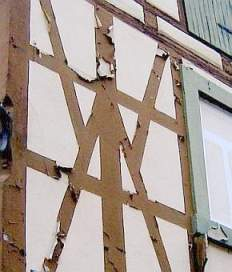
Zum Thema Verputz muß jedoch klar sein: Auch bei allen Mühen um Perfektion wird es den rissefreien Fachwerkbau nie geben. Das muß dem Bauherr rechtzeitig klargemacht werden. Innen- und Außenputze über Fachwerkhölzern und Deckenbalken sind auch bei der Anwendung von teilweise untergrundentkoppelten Rohrmattenputzen (sie ermöglichen schlitzlose Elektroinstallation und den Erhalt der Altputze/Putzfragmente), gut geführten Kellenschnitten und sonstigen Bewegungsfugen nicht ganz ausschließbar. Ein Fachwerkbau lebt - und Holz bewegt sich eben. Vor allem, wenn das Bauwerk längere Zeit unbeheizt dastand, damit Holzfeuchten von 15-25% annehmen konnte und nach Betrieb über einige Jahre wieder auf 7-10% Holzfeuchte runtertrocknet. Na und? Schlimm ist das nur für Energiesparheinis, deren bösartig abdichtende Dampfsperren sich nach kurzer Zeit als zielgenaue Befeuchtungskonstruktionen entpuppen. Seit wann wären denn Fugendichtungen jemals dauerstabil? Na also.
Fachwerk.de- schön gemachte private Fachwerkseite mit Bauherrenforum (und
teils mehr als ulkigen (industrieabhängigen) Antworten)
Zu einigen meiner Forumsbeiträge im dortigen Fachwerkforum - Interessante Fragen,
DIY-Bastelhinweise und Fachkompetenz im Wettbewerb:
Mein Profil auf Fachwerk.de
Bausanierung allgemein
Kein Fachwerkhaus aber genug Sorgen.
<> Laie sucht seriösen unabhängigen Profi
<> Kosten für Architekt <>
Fachwerkhaus, wie findet man Mängel? <>
Gestaltung
Flachschnitzereien auf Eckständer <>
Energiesparen an Dach und Wand
Isolation / Wärmedämmung Steinhaus <>
Altbau Wärmedämmung zwecks Energieeinsparung
<> Ab wann muß man ein Haus dämmen?
<> Wärmedämmung
meiner Scheune in Ostfriesland <> Dachgeschoßausbau
einer Scheune <> Dämmen
bei "alternativem" Dachausbau <> Kd2
Glaswolle oder normaler Klemmfilz? <> Rigips
vor Fachwerk ok? <> Rigips
mit Styropordämmung und Ohne, einige Fragen??? <>
(Innen-) Dämmung eines Windfangs mit
Ziegel-Sichtmauerwerk <> Kosten
für Aussendämmung <> Innendämmung
von Fachwerkhaus <> Innendämmung
von Lehmaußenwand im Bad <> Altbaudachdämmung
<> Aussenwände
von innen Dämmen <> Dachdämmung
<> Wandaufbau und Isolierung <>
Welches Material für Sparrendämmung?
<> Wärmedämmung
auf Natursteinwand <> Außendämmung
mit Putz <> Hanfisolierung?
<> Wärmedämmung eines Dachgeschosses <>
Haustechnik
Leitungen im Fachwerk <>
Heizung
Gas oder Öl??
<> Heizleisten
pro/contra <> Wandheizung
für Bruchsteinhaus? <> Wer
hat Erfahrungen mit Elektro-Fussbodenheizungen?
<> Infrarot
Heizsysteme <> Wandheizung Heraklith Recycling <>
Fenster
Welche Fenster?
<> Einfachverglasung
- wirklich eine schlechte Idee? <> Fenster
richtig streichen <> Günstiger
Fensterbauer? <> Fensterfarbe
bei Fachwerk? <> Haus
Baujahr 1908, welche Fenster? <>
Putz/Mörtel/Wand/Gefach/Gewände/Dach
Putztechniken an
Bruchsteinmauer <> Ausfachung
mit Porenbeton <> Alternativen
zu Malervlies und Chemie-Kleber! <> Ausfachung
wie? <> Fachwerkkonstruktion
vor alte Wand bauen <> Entfernung
von Farbe auf Außenbalken <> Granitmauer
verfugen - Trasszement oder Trasskalk? <> Lehmfarbe
auf Gipsputz und altem Kalkputz <> Fassade
streichen, Grundierung <> Schallschutzwand
aus Beton? <> Sandsteinmauer
im Garten <> Plastisches
Mosaik an Fachwerkfassade <> 2.
Wasserführende Schicht unter Dachdeckung mit Brettern? <>
Welche Farbe auf
Kalk-Zement-Putz <> Kosten
Lehmgefachreparatur <> Sandstein
reinigen von Anstrich und verfestigen <> Welche
Fugenausbildung Holz-Gefach ist die Richtige?
<> versotteten
Schornstein mit Lehm und Kuhdung verputzen <> Entfernung
von Farbe auf Außenbalken <> Neue
Balkonbretter - wie behandeln für Langlebigkeit? <>
Feuchte Wände
Feuchte Innenwände - verstopfte Unterlüftung der Grund?
<> Feuchten
Raum mit Lehm verputzen <> Luftkalk
oder hydraulischer Kalk (PM Binder) <> Kellerinnenputz
auf Basis Kaliumsilicat (Wasserglas) <> Sandsteinhaus
nicht unterkellert - Feuchtigkeitsprobleme <> Alten
Keller sanieren <> Ammoniakgetränkte
Stallwand sanieren <> Suche
Sachverständigen in Niedersachsen, Raum Harz (feuchte Wände)
<> Nasser
Keller / trocknen oder nicht? <> Sandsteinmauer
/ Tragendes Fundament feucht <> Feuchte
Wände <> Beim
Neubau Salpeter in Innenwänden <> Parafin-Injektion
<> Feuchter, unisolierter Keller m. Brunnen - Dampfsperre zum EG?
<> Feuchteanstieg
in einem Raum nach Wasserschaden <> Feuchte
Grundmauer <> Schimmel
auf neuem Lehmgefach <> Sandsteinaußenmauer
an einer stark befahrenen Straße neu verfugen und vor Straßenwasser schützen <>
Fußboden/Treppe/Decke
Alte Vollziegel
als Bodenbelag verlegt <> Dielenboden
über Lehm - welche optimale Wärmedämmung?
<> Reinigung
von alten Fliesen <> Dämmung
ohne Estrich möglich? <> Mal
wieder Fußbodenaufbau und die Frage nach dem was mach ich nun ???
<> Risse in
den Fliesenfugen - was nun? <> Holzterrasse
Risse <> Bodenaufbau
Holzbalkendecke <> Holzbalkendecke
wärmedämmen <> Holzschaden
durch Gußasphalt auf Holzfußboden?
<> Gussasphalt
für Holzbalkendecke <> Wie
Parkett entfernen? <> Bodenaufbau?
Evtl. mit Schaumglas? <> Sandsteinaußentreppe
defekt - wie reparieren? <> Bodenaufbau
Holzbalckendecke <>
Schimmel, Schwamm und Insektenbefall
Schimmel unter Latexfarbe
an der Wand <> Schimmelbefall
im gesamten Haus! <> Kleine
Schimmelflecken <> Imprägnierung,
ja oder nein <> Wie
kriege ich die Holzwürmer aus der Treppe?
<> Holzwurm
& Co. <> Holzwurmbekämpfung
im Ökoverfahren? <> Befall
mit Schadinsekten <> Kleiner
Käfer (kann fliegen) 3-5mm, schwarz/braun gestreift, Holzdielen <>
Holzwürmer
im Dachgebälk <> Holzwurm
für eine Ausstellung über Holzschädlinge gesucht <>
Hausschwamm
<> Wie hoch
ist das Risiko eines Wiederauflebens des Schwamms nach Sanierung? <>
Hausschwamm durch Leichtlehmschüttung möglich?
<> Holzschutz
Gutachter? <> Beratung
gesucht <> Weißer
Belag in Natursteinkeller <> Knoff
Hoff von Schimmelprofis ist gefragt <> Hausbockbefall
in altem Bauernhaus <>
Abriß/Translozierung/alte Baustoffe/Verkauf/Finanzierung
Abriss und andernorts Neuaufbau eines gut erhaltenen Fachwerkhauses
<> Biberschwänze verkaufen? <>
Hauskauf/Erbschaft
Hilfe! Bauchweh bei Kauf eines Fertigteilhauses Baujahr 1971!
<> Suche
kompetente Kaufberatung <> Suche
Fachmann zur Schadensermittlung: Fachwerk-Sanierung <> Beratung
gesucht <> Haus-
und Schadensbegutachtung <> Was
kostet mich mein Lieblingshaus? <>
Suche kompetente Kaufberatung in Nordbrandenburg/Mecklenburg-Strelitz
<> Sachverständiger/Gutachter
Großraum Koblenz-Limburg <> Erbschaft/Fachwerkhaus
Anfang 1800 - Was nun? <>
Diskussion über und mit Konrad Fischer - Freunde und andere
Papageien und Ventilatoren
<> Kurzmitteilung
aus Meldungsdorf <> Änderung
im Forumsbetrieb <> Gute
alte Zeit - oder Heuschrecken und andere Egomanen <> Das
Fachwerk.de-Beitragsbewertungssystem (beta)
Fachwerkhaus.de, die obigen
"Fachwerknachtrag" super aufgemacht hat: Todsünden
bei der Fachwerksanierung - oder: Generalabrechnung mit sog. Experten Danke!
Zimmmerin.de -> Über Restauro - Der Seite über Restauration im Holzbau.
Neu: Lehmbauseminare von Beatrice Ortlepp:
Gesund wohnen + preiswert bauen -
für Selbermacher, auf Wunsch auch in Ihrem Haus und mit eigenem Lehm!
www.weto.de
- Holzbausoftware - auch für Fachwerkbau!
Hier ein Bild des Fachwerkhofs, aus dem mein Vater stammt. Der große Bauern- und ehem. Brauereigasthof ist seit Jahrhunderten in Familienbesitz und noch nicht kaputtrestauriert.

In diesem Fachwerkbau, eine ehem. Zisterzienser-Klostermühle in
Hochstadt am Main, ist mein Büro. Der Fachwerkanbau hinten ist von
meinem Vater (1974), vorne von mir geplant worden (1981), Innen- und Außeninstandsetzung
ab 1987. Ein Bild aus den frühen 60ern
So gehts auch, wenn man nicht immer abreissen will. Natürlich nur ohne "Fachleute", externe Holzschutzschwachverständige, Salzionenanalysierer und sonstige Mauerwerksschlechtachter (einige Fachwerk-Sanierungsprojekte meines Büros):
 +
+ 1.
Barockes Torhaus vor und nach Sanierung (Dachdämmung Holz massiv!)
1.
Barockes Torhaus vor und nach Sanierung (Dachdämmung Holz massiv!)
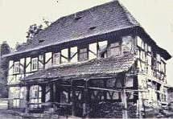
+ .
.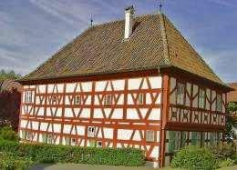
.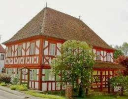
.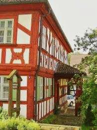
2. Barockes Wohnhaus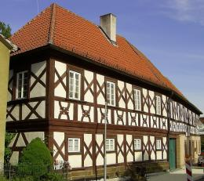
3. Barocker Brauereigasthof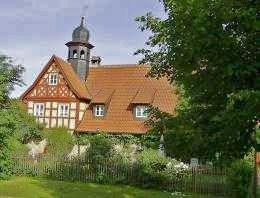
.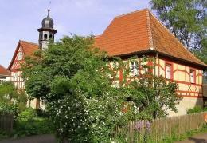
.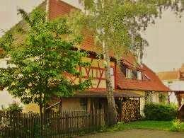
4. Barockes Gemeindehaus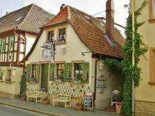
.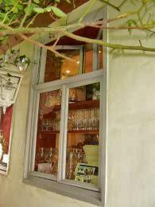
.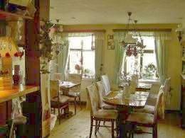
.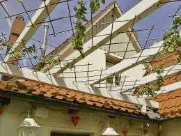
5. Ehem. Schusterhäusla (Fachwerk verputzt) in Bad Staffelstein, jetzt gemütliches Restaurant für Brotzeiten und Spezialitätengastronomie mit ca. 50 Plätzen 6. Ehem. Gasthof zum Stern (Barockfachwerk verputzt) in Schwürbitz,
Außeninstandsetzung (hier lebte meine Familie und war das erste Architekturbüro meines Vaters 1957-62)
6. Ehem. Gasthof zum Stern (Barockfachwerk verputzt) in Schwürbitz,
Außeninstandsetzung (hier lebte meine Familie und war das erste Architekturbüro meines Vaters 1957-62)
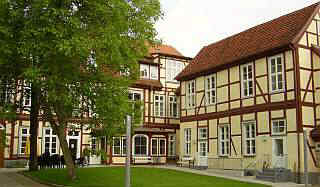
7. Konservatorium im ehem. Ministerpalais in Schwerin (mehr Bilder vor und nach Sanierung) Hier weiter: [Kapitel 19]{kind=link}